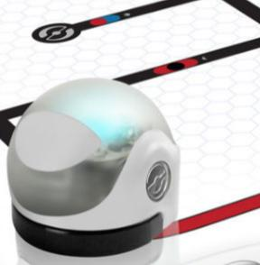

Ozobot is a robot that you can program to move and change color. It also responds to codes that control these and other functions.
Ozobot can be programmed to read color codes; this means that when it touches a color code, it will do something specific like spin or stop. You can give it commands by drawing color patterns on paper. Ozobot is also programmable using a block coding app.
Ozobot has five sensors underneath it, which it uses to sense color. Once you turn on Ozobot, it will begin to search for color. If it senses color, it will begin to move in search of lines (paths) to follow.
You can tell Ozobot what to do with color codes. Use this chart to help you program Ozobot to do specific things.
If you choose to program Ozobot with markers, keep in mind that it likes to follow thick lines (1/4 inch).
Direct Link: How To: Draw a Perfect Line for Your Ozobot
Once you have your lines drawn, be sure to calibrate your robot.
Direct Link: How To: Calibrate Your Ozobot Bit on Digital Screens
Ozobot can also be programmed to move with block codes in an app called Ozoblockly. To learn to code loops, light effects, and movement with the OzoBlockly app, check out the activities below.
Explore sequencing, debugging, and loops with the Ozobot Simulator.
This video tutorial includes instructions for coding, calibrating, and loading your program into Ozobot’s controller.
Direct Link: Getting Started With OzoBlockly